Days 1–30: I Started Noticing Small Changes.
There were still strands between my fingers when I rinsed, but on some wash days, there seemed to be fewer. It was subtle, so I kept comparing with my starting photos.
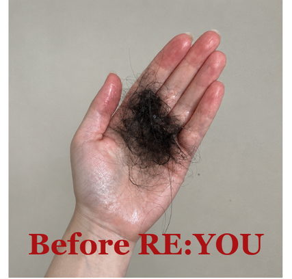
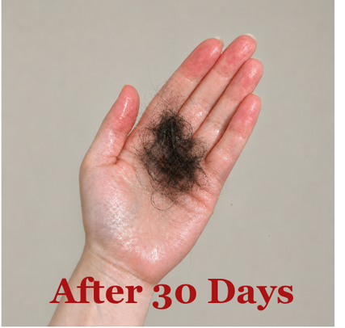
Another day of dry shampoo felt easier than facing another shower. But when I caught myself planning my week around avoiding wash day, I started looking for something different. That search led me to RE:YOU.
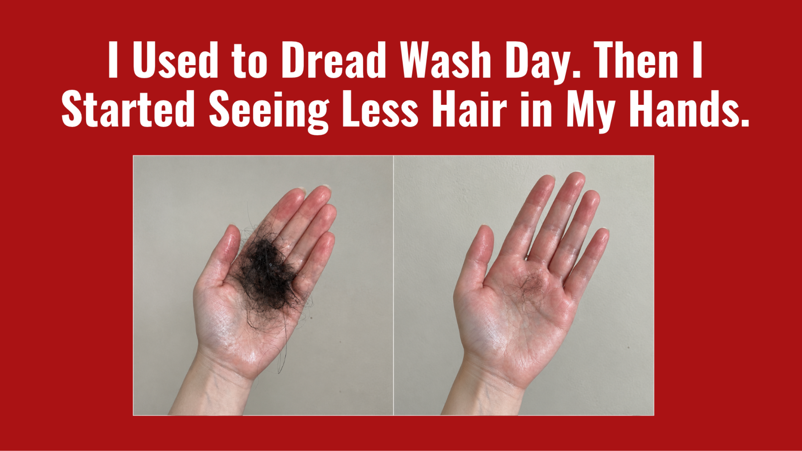
My hair needed washing. I’d already used dry shampoo twice.
But I stood in front of the mirror, checking whether I could get away with tying it back again. Tomorrow, I told myself.
Because once I got in the shower, I knew I’d start checking my hands.
The first few strands, I could brush off. Then I’d rinse, run my fingers through again, and find more wrapped around them.
I’d try to be gentler. Barely touch it.
Am I making it worse?
By the time I turned off the water, I’d already be looking for what had collected around the drain.
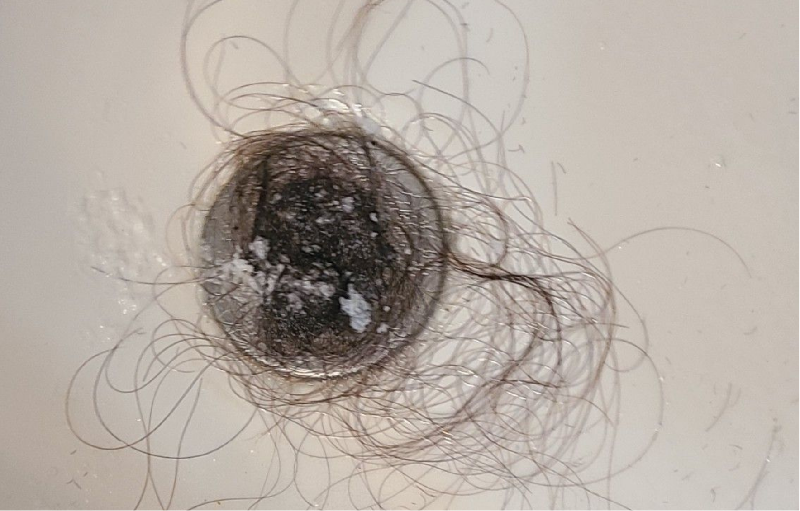
I’d gather it up and hold it for a second.
That was the part I hated.
Knowing that a few minutes ago, this had been on my head.
“I wasn’t just looking at the hair I’d lost that day. I was wondering how much I’d have left if it kept happening.”
I knew everyone shed hair. I’d read that so many times.
But I remembered when I didn’t have to think about it. When I could wash my hair without examining my hands afterward. When cleaning the drain was just cleaning the drain.
Now I was taking pictures of it.
Comparing one wash with another. Trying to remember whether my ponytail had always felt this small.
Then I’d reach for my brush and find more.
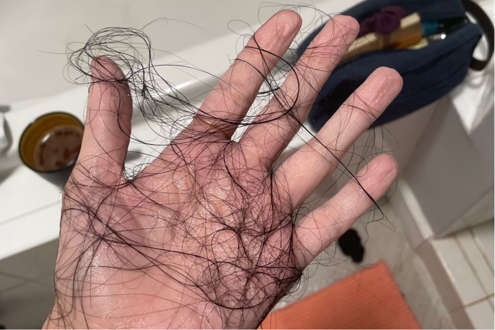
Putting it off meant I didn’t have to face that moment tonight.
It didn’t stop me checking my part before I left the house. Or wondering whether someone standing behind me could see what I kept looking for in the mirror.
I felt embarrassed by how much it bothered me. So I stopped bringing it up as often.
But I was still thinking about it.
One evening, I caught myself reaching for the dry shampoo again, and I just felt tired.
Tired of checking. Tired of searching. Tired of telling myself I’d deal with it tomorrow.
“I wanted to wash my hair, dry it, and get on with my evening. I missed when it was that simple.”
I wanted more than another night of searching. I wanted to understand what was happening and what my options were.
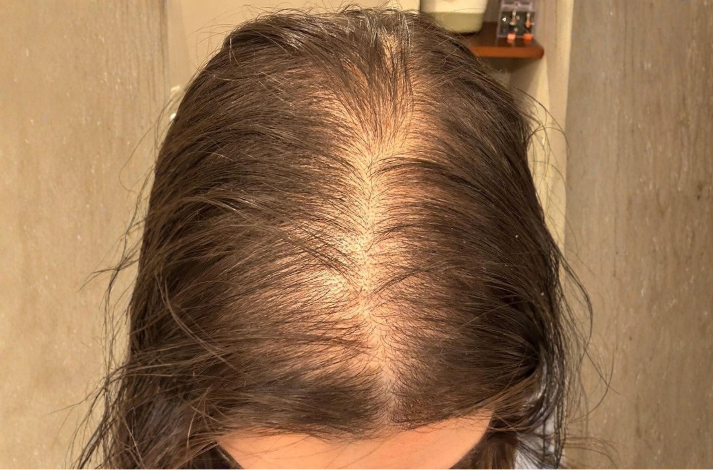
I brought the photos to my dermatology appointment. I wasn’t sure how else to explain what I’d been seeing.
I explained how I checked my hands every time I rinsed. How I photographed the hair in the drain. How I’d started putting off washing it because I couldn’t face seeing more come out.
I wanted to understand what was happening and what I could do about it.
My dermatologist recommended RE:YOU Hair Serum, explaining that the brand invested $2 million in research and development to create its proprietary NOVOGRO™ technology, which focuses on supporting both the hair follicle itself and the scalp around it.
Supports cellular energy and the health of the hair follicle, the command center of hair growth.
Supports a nourished scalp environment, the foundation for healthy hair growth.
The two-part approach helped me understand the formula. But what caught my attention was that RE:YOU had also tested the finished serum.
According to RE:YOU, an independent, randomized, double-blind clinical trial conducted by Eurofins enrolled 190 women aged 35–70 with mild to moderate female pattern hair loss and compared RE:YOU with minoxidil. It is one of the most rigorous clinical studies in the beauty industry.
† 90-day interim results reported by RE:YOU from an independent, randomized, double-blind trial of 190 women, conducted by Eurofins and compared with minoxidil. Individual results vary.
I wanted to know what changed in the moments that worried me most: rinsing my hair, clearing the drain, and brushing afterward.
There were still strands between my fingers when I rinsed, but on some wash days, there seemed to be fewer. It was subtle, so I kept comparing with my starting photos.


I started noticing fewer strands caught between my fingers when I rinsed. After brushing, there was less hair to pull from the bristles. Seeing that across several washes made me pay attention.
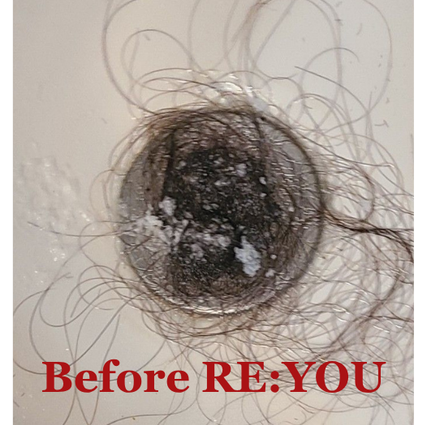
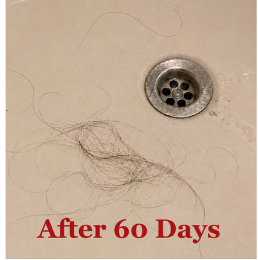
The hair I gathered from the drain looked noticeably smaller than when I started. My brush needed less clearing, too. I still shed, but I stopped reaching for dry shampoo just to postpone another wash.
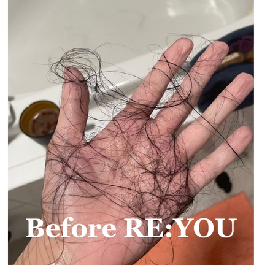
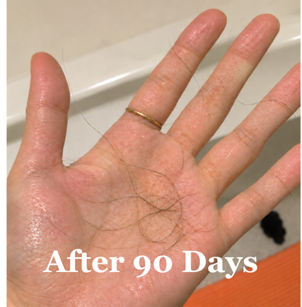
After those 90 days, RE:YOU Hair Serum had become a regular part of my routine. I’d tried other products before, but this was the one I kept coming back to.
The lightweight, non-greasy formula didn’t leave my hair feeling oily or weighed down, making it easy to stick with.
If you’re dealing with thinning hair or noticing more shedding like I was, you might be curious about it too. Here’s the serum I’ve been using.
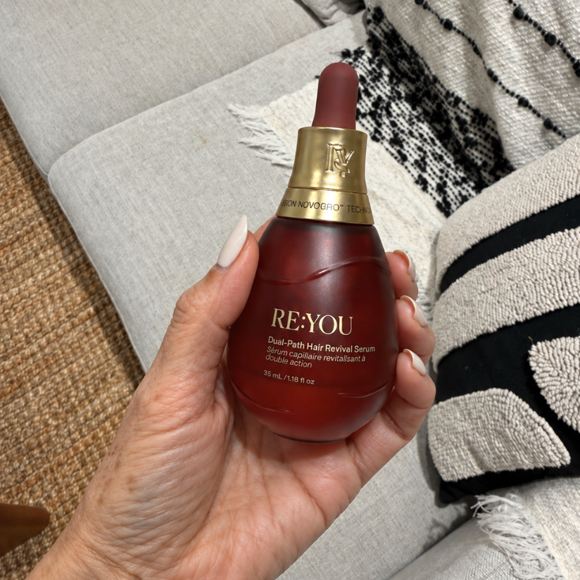